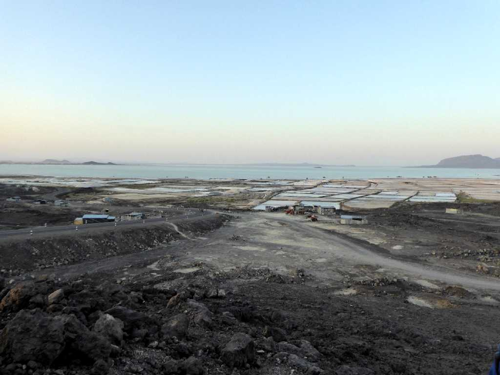
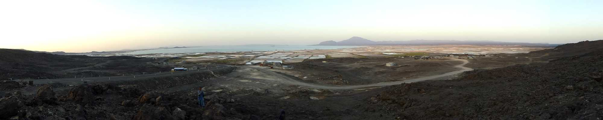
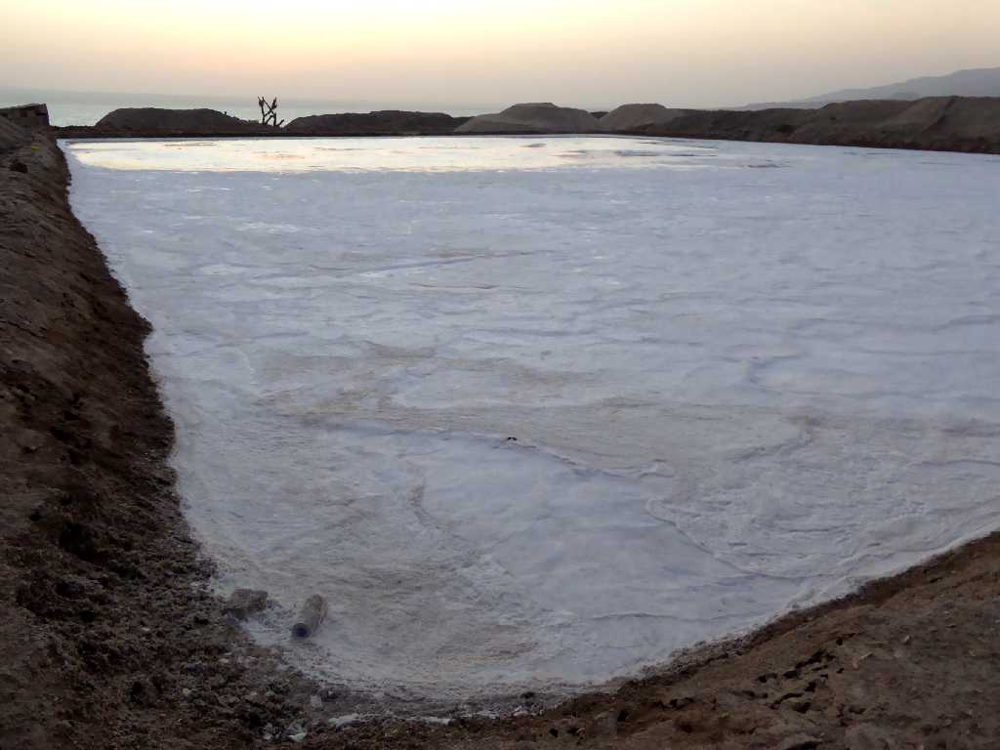
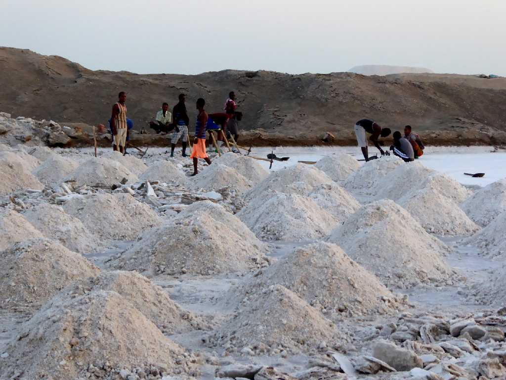
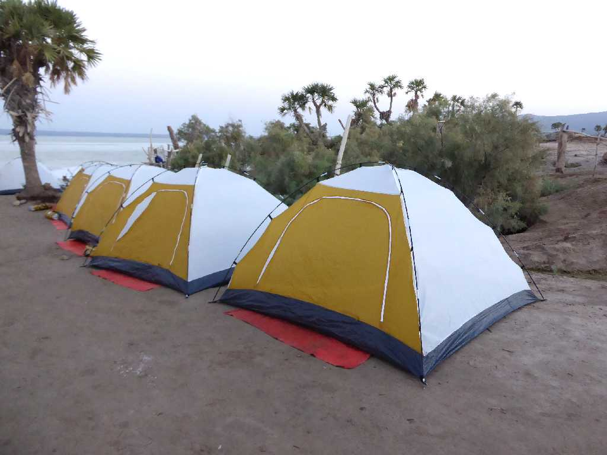
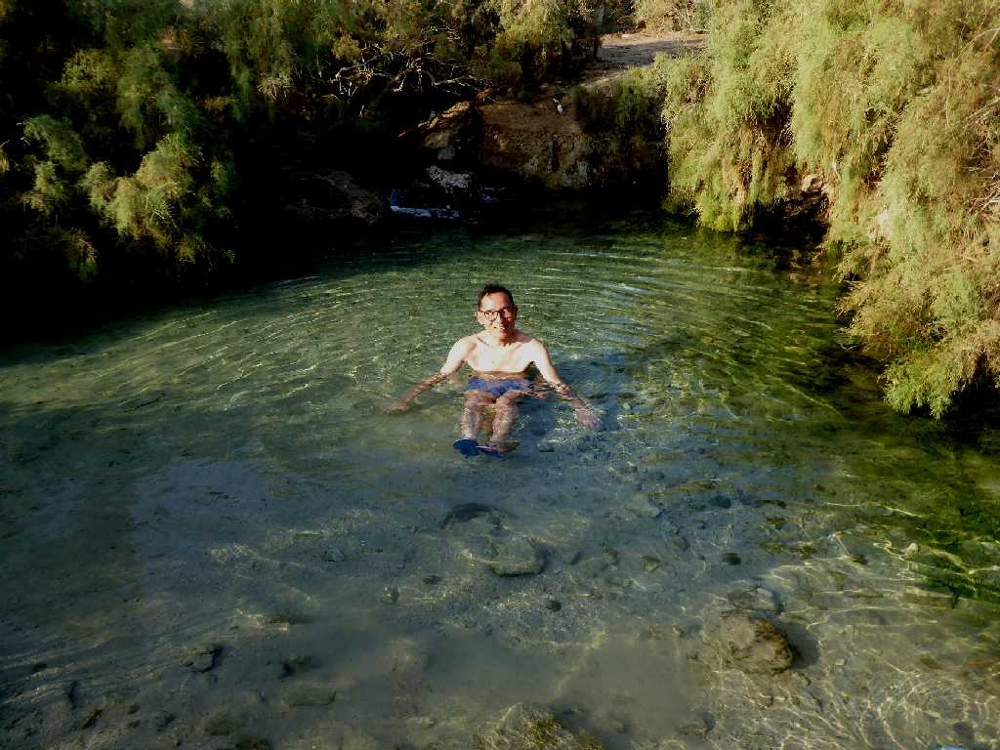

Lake Afrera
手前に塩田が広がるアフレラ湖

Lake Afrera

Salt Field Lake Afrera
内陸の塩田から作られた塩なので海塩と異なりヨウ素が含まれていないためバセドウ病を防ぐのにヨウ素を加えて出荷している。

Salt Field Lake Afrera

Camp Lake Afrera
今日から５泊連続のテント生活の旅に入る

January 21 2017 Hot spring Camp Lake Afrera
アフレラ湖畔のキャンプ場にある自然温泉で朝風呂を満喫